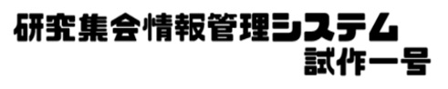
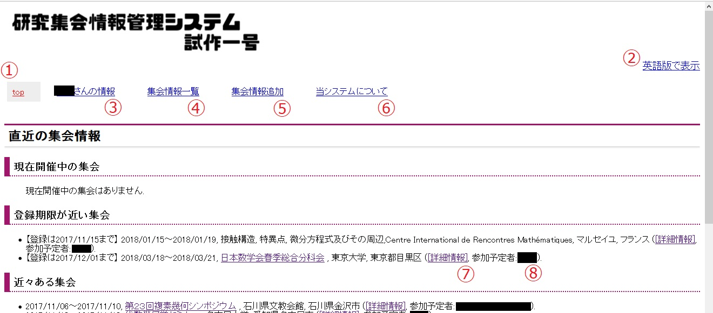
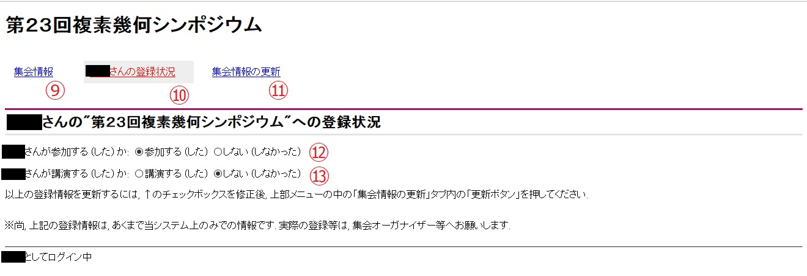
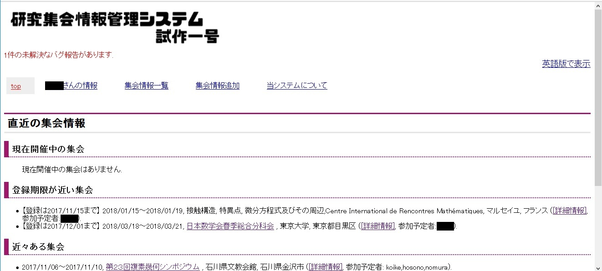

「研究集会情報管理システム試作一号」について
目次
- 概要
- ログインID/Pass
- 表示される内容
- 集会情報の登録
- 集会情報の詳細表示と内容の修正, 参加/講演情報の登録
- バグ報告
- その他
概要
「研究集会情報管理システム試作一号」は, 研究集会情報を仲間内で共有・整理することを目的としたシステムです. urlは
http://tkoike.php.xdomain.jp/conferencemanager/
です (ログインID/Passが必要です).
具体的に出来ることとしては,
- 研究集会やセミナー等の開催情報を登録できる.
- 登録されている閲覧日から, 参加登録の期限が近い集会・セミナーを表示.
- さらに, 自分がその集会・セミナーに出席予定, 又はそこで講演する予定である場合は, その旨登録可能.
- 他のどのシステム利用者が, その集会・セミナーに出席予定か, 講演をする予定かどうかを閲覧可能.
- 閲覧日よりも未来に開催される集会・セミナー情報の内, 閲覧者が参加予定の物を「参加予定の集会」として開催日時順に表示.
- 閲覧日よりも過去に開催された集会・セミナー情報の内, 閲覧者が講演したと登録されているものを「講演した過去の集会」として表示. さらにその内容を, 「研究集会」,「セミナー等」,「その他」に分けて表示可能.
などです.
特に, 例えば
- 今後参加する集会情報をすべてご登録することにして, 「参加予定の集会」を今後の出張予定表として活用
- ある年度に参加/講演した (する) 集会情報をすべてご登録するで, 「講演した過去の集会」を年次報告に活用
等の活用方法を想定しています.
さらに高度な活用方法として, 適切な手続きを踏むことで,
これらの整理された集会情報を, 外部のwebサイトに埋め込むことも可能になります.
それにより,
- 当システムと連動させることによる, 閲覧者自信のwebサイトの講演予定/履歴ページの更新の自動化
も可能です (これについては, ログインID/Passを取得後, こちらの取扱説明をご参照ください).
ログインID/Pass
当システムをご利用いただくためには, ログインID/Passの取得が必要です.
ご希望の方は, どうぞお気軽に小池までお問い合わせ下さい.
初期ID/パスワードをお送りいたします.
尚, パスワードの変更方法につきましては, ログインID/Passを取得後, こちらの取扱説明をご参照ください.
表示される内容
ログイン後, 以下のように表示されます:

尚, 画像ではID名を黒塗りにしています.
画面の上部にタブメニューがあります.
赤字で①と印をつけた部分をクリックすることで, このtop画面に戻ることができます.
このtop画面では, システムに登録済みの集会情報の内,
- 現在開催中の集会
- 登録期限が近い集会 (閲覧日以降に参加登録の期限が設定されている集会の内, 最近のもの10件)
- 近々ある集会 (閲覧日以降に開催期間が設定されている集会の内, 最近のもの10件)
が表示されます.
また, 画面右上の②の部分から, 集会情報の表示形式を英語/日本語の二通りに切り替えられます.
上部タブメニュー内③から, 閲覧者が参加/講演をする (した) とシステムに登録がある集会情報を閲覧できます.
ここでは,
- 閲覧者が参加予定の集会 (閲覧日以降に開催期限が設定されている集会の内, 閲覧者が参加すると登録があるもの. さらに講演をするものは赤字で表示される)
- 閲覧者が講演した過去の集会 (閲覧日以前に開催期限が設定されている集会の内, 閲覧者が講演したと登録があるもの. 「研究集会」,「セミナー等」,「その他」に分けて表示可能)
- 閲覧者が参加した過去の集会 (閲覧日以前に開催期限が設定されている集会の内, 閲覧者が参加したと登録があるもの一覧)
が表示されます.
上部タブメニュー内④からは, システムに登録されている集会情報が開催日時順に一覧形式で閲覧できます.
集会情報の登録
上部タブメニュー内「集会情報追加」(前項目の画像内で赤字で⑤と印をした場所)をクリックすることで, 集会情報追加画面になります.
ここから, システムに新たに集会情報を登録できます.
尚, ここではあくまで既に一般に公開されている情報のみを正確に登録いただくようお願いいたします.
また, 登録後に集会情報の修正/更新ができます.
詳細は次項目をご覧ください.
集会情報の詳細表示と内容の修正, 参加/講演情報の登録
表示される集会情報の最後にある"[詳細情報]" (前項目の画像内で赤字で⑦と印をした場所など) をクリックすることで, 当該集会の詳細情報画面が表示されます.
詳細情報画面は以下の様な形で, ブラウザの新しいタブ (ウインドウ) で表示されます:

上部タブメニュー内「集会情報」(画像内で赤字で⑨と印をした場所) からは,
- 開催期間・登録期間
- 集会名・開催場所の日本語での表示
- 集会名・開催場所の英語での表示
- その他の情報 (webサイトurl, システムに登録されている参加者及び講演者の一覧, 研究集会/セミナー等/その他の種別, 備考)
が閲覧できます.
上の画像は, 上部タブメニュー内「閲覧者の登録状況」(画像内で赤字で⑩と印をした場所) をクリックした画面です.
ここでは, 当システム上で, 閲覧者が当該集会について
- 参加する (した) と登録されているかどうか (画像内⑫)
- 講演する (した) と登録されているかどうか (画像内⑬)
が確認できます.
これらの情報を変更するには,
- まず画像内⑫及び⑬のラジオボタンのチェックを変更し,
- 次に上部タブメニュー内「集会情報の更新」(画像内で赤字で⑪と印をした場所) をクリックして,
- 最後に画面最下部の「更新」ボタンを押す
ことで変更ができます.
尚, こちらで扱われている参加及び講演の情報は, あくまで当システム内のみでの情報です.
実際の参加登録や講演登録は, 当該研究集会のオーガナイザー等からの指示に基づきご自身で行って下さい (当システムには, 自動的に当該研究集会のオーガナイザー等に参加/講演申し込みを行うような機能は一切ありませんのでご了承ください).
上部タブメニュー内「集会情報の更新」(画像内で赤字で⑪と印をした場所) には,
この「更新」ボタンの他に, 集会情報の入力フォームがあります.
集会情報の変更や修正, 更新は, こちらから随時可能です.
バグ報告
万が一当システムで不具合等を見つけられた場合, どうかご遠慮なく小池までお知らせください.
もちろん, 不具合でなくとも, 改善点等もぜひよろしくお願いします.
ご連絡はメールや口頭等, どのような形でも結構ですが, システム内にバグ報告用の掲示板のようなものも設置してあります.
システムからのバグ報告には, もとの画面上部タブメニューの中の「当システムについて」(画像内で赤字で⑥と印をした場所) をクリックして下さい.
その中の「バグ報告一覧と掲示板」から, バグ報告用のページが表示できます.
尚, システムからバグ報告を頂きますと, 下図のようにシステム上部にその旨赤字で記されるようになっております:

是非ご活用下さい.
その他
その他, システム利用後に発生しうる事柄につきましては,
取扱説明ページにまとめてあります.
取扱説明ページへは, もとの画面上部タブメニューの中の「当システムについて」(画像内で赤字で⑥と印をした場所) にもリンクを貼ってあります.